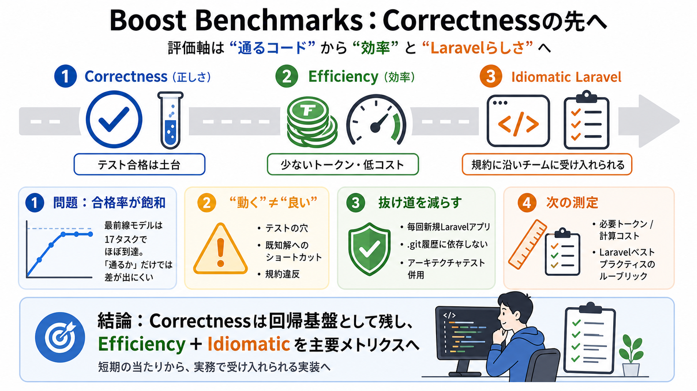

Best AI Coding Tools for Laravel Developers in 2026 - DEV Community
The Laravel team's Boost Benchmarks tested six AI models against real Laravel problems. They evaluated PHP fluency, conv…

評価の焦点が変わる
AIコーディング評価は「通るコード（Correctness）」から、「少ないトークン/コストで」「Laravelらしく（イディオマティック）」作る能力へ移っています。
合格率が飽和する
最前線モデルがテストをほぼ確実に通せるようになり、ベンチマークの差が縮んで「合格するか」が意味を失いがちです。
テスト合格＝正しさ
合格率が飽和→差が出ない
「動く」と「良い」は別
テストが通っても、テストの穴・既知解の探索・規約違反（動くがLaravelらしくない）などで「良いコード」を保証できません。
テストケースの欠陥
GitHub履歴などへの依存
動くがLaravel規約から外れる
Correctnessは“ほぼ解けた”
Boostの17評価タスクでは、少なくとも「正しいコード」要件は最前線モデルでほぼ100%精度まで到達した、と説明されています。
構文っぽさ・見た目より「動作＋Pest」
合格ラインが飽和（到達）
抜け道を減らす設計
Boostは毎回新規Laravelアプリから開始し、.git履歴への依存を避け、さらにアーキテクチャテストも併用することでリスクを抑えています。
毎回新しいLaravelアプリ
.gitに答えを埋め込まない方針
アーキテクチャテスト併用
次は“作業量”と“筋”
Correctnessを土台に、次の主戦場は「効率（トークン/コスト）」と「Laravelらしさ（イディオマティック）」です。
正解までに必要な推論量・計算量
Laravelの推奨パターンに沿う実装
効率：同じ正解でも
同じ正解に到達しても、必要トークンとコストが桁違いになることがあり得ます。その差を北極星にします。
必要トークン / 計算コスト
余計な情報・試行を減らす
Laravelらしさ：規約
テストは通っても、生クエリやRoute・フォームリクエスト・$fillableなどの慣習を無視すると受け入れられにくい、という観点です。
生クエリの多用
Route::resource()未活用
フォームリクエスト / $fillable 逸脱
ルーブリックで検査可能に
Laravelベストプラクティスに基づくルーブリック（検査可能な観点）でイディオマティックを評価し、「通すだけ」を抑える設計を狙います。
曖昧な美的センス→判定可能な規約
19の具体的観点（記事の記述）を活用
回帰は残し、層を重ねる
既存の17 evalは回帰テスト基盤として残しつつ、効率（トークン/コスト）とイディオマティックを主要メトリクスに上乗せする方針です。
17 evalを回帰基盤に
Efficiency（効率）を主要化
Idiomatic（イディオム）を主要化
懸念：万能ではない
イディオマティック評価はルーブリック化されても、現場の合意やプロジェクト制約と一致するかの検証が必要です。
規約違反でも合理的な例外があり得る
過度なコンテキスト締め込みは品質/汎化を損ねる可能性
ボトムライン
Correctnessは土台で、次の測定対象はEfficiency（効率）とIdiomatic Laravel（イディオマティック）です。評価の進化により「短期の当たり」から「実務で受け入れられる実装」へ近づけます。
Correctness（正しさ）
Efficiency＋Idiomatic（効率＋Laravelらしさ）
The Laravel team's Boost Benchmarks tested six AI models against real Laravel problems. They evaluated PHP fluency, conv…
pattern, LLMs stop guessing and start generating that sweet sweet code. The Laravel team clearly sees this. They've just…
We also observed that enabling Boost can add token, context, and sometimes time overhead. Since agents make MCP calls to…
Sure, it’s still early and there’s plenty of room for it to grow. But even now, it already saves time, produces cleaner …
Laravel Boost, released by the Laravel team in 2025, is the standout. It runs as a Model Context Protocol server and fee…